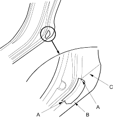

- Slowly peel up the old side sill protection tape.
- Clean the body bonding surface with a sponge dampened in alcohol. After cleaning, keep oil, grease and water from getting on the surface.
- Peel the adhesive backing from the side sill protection tape.
- Align the alignment marks (A) of the side sill protection tape (B) with the body line (C), then press the tape into place.

- Remove the application tape.